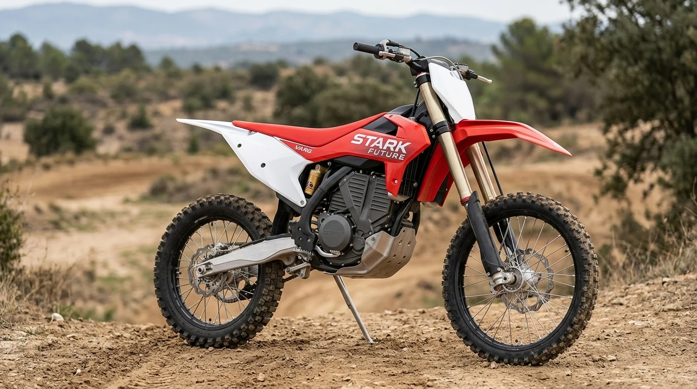

Stark Future Reaches €1.2 Billion Valuation After €150 Million Funding Round
Stark Future raised more than €150 million at a €1.2 billion pre-money valuation, funding its expansion beyond off-road electric motorcycles.

Barcelona-based Stark Future has raised at least €150 million in new equity at a pre-money valuation of €1.2 billion, becoming the first electric motorcycle company in Europe to reach unicorn status, according to its founder and chief executive Anton Wass. The funding gives the company fresh capital to expand beyond off-road motorcycles, while its projected 2026 revenue and profitability will test whether the business can scale without relying on repeated private-market fundraising.
The round was led by Highland Europe, alongside Morgan Stanley Investment Management’s 1GT and Axon Partners Group. Stark’s valuation is 60% above the €750 million level attached to its previous funding round in September 2025. Wass said a second closing could increase the amount raised, although the company did not disclose a final total or detailed terms for the investors’ stakes.
Growth Targets Move Beyond Off-Road Racing
Stark expects revenue of approximately €150 million in 2026, up about 30% from €115 million in 2025, Wass told Reuters. The company also expects to report positive earnings before interest and tax this year, although the chief executive did not disclose a forecast figure or provide a breakdown of operating costs.
The company says it has captured about 5% of the €3 billion market for Motocross, Enduro and Supermoto. That figure was provided by its chief executive and refers to the categories in which Stark has established its position, rather than the entire global motorcycle market.
The new funding is intended to support entry into motorcycle markets that Wass values at approximately €90 billion. Stark is targeting a 10% to 30% share of those broader markets. That ambition represents a substantial expansion from its current specialist base and should be viewed as a management target, not a confirmed sales forecast.
A Larger Market Brings a Different Competitive Test
The expansion will also test production economics. A company can build a premium product for a focused group of riders, but a much larger market requires distribution, spare-parts availability, warranty processes and service capacity across more regions. These functions can increase fixed costs and working-capital needs, as the pressure on established manufacturers such as BMW illustrates.
Stark’s strategy is based on competing on performance and usability rather than relying mainly on environmental positioning. Wass said the company wants its electric motorcycles to be attractive to riders even if sustainability is not their primary motivation. That approach puts the products against combustion-engine motorcycles on performance and usability, not electrification alone.
The broader electric-vehicle market has shown that charging access and reliability can shape adoption as much as vehicle specifications. The issues raised in the EV charging reliability and safety review are relevant to the wider transition, although motorcycle charging patterns and infrastructure needs are not identical to those of passenger cars.
Funding Provides Time, but Raises the Execution Bar
Wass said Stark had received takeover approaches but was not interested in selling. He hopes the latest financing will be the company’s final private funding round before a potential listing, which he said could still be a couple of years away. That timetable is conditional: a public-market debut would depend on business performance, market conditions and the company’s readiness to meet listing and reporting requirements.
For Stark, the €150 million-plus round provides capital to develop products and expand its addressable market. It also creates a clearer set of milestones for investors to monitor: whether revenue reaches the company’s 2026 target, whether operating earnings turn positive, how much cash expansion consumes and whether new motorcycle categories attract customers without eroding margins.
The distinction between operating profitability and cash generation will be important. A positive earnings-before-interest-and-tax result would indicate that the company expects its core operations to cover operating expenses and depreciation, but it would not by itself show how much cash remains after capital expenditure, inventory growth and other working-capital requirements. Manufacturers entering new product categories often need to commit funds before deliveries generate revenue.
What Investors Will Need to See Next
The €1.2 billion pre-money valuation is roughly eight times the company’s projected €150 million in 2026 revenue. This is an indicative equity-value-to-sales comparison, not an enterprise-value multiple, because the company has not disclosed the net-debt and cash figures needed for that calculation. It implies that investors are pricing in significant growth beyond the company’s current off-road position. A successful expansion could make Stark a more substantial participant in the motorcycle industry. Failure to translate its racing credentials and engineering model into larger categories could leave it with a valuation that is difficult to support through current sales alone.
The next evidence will come from operating performance rather than the headline valuation. Investors will need to see audited financial results, production capacity, delivery volumes, customer retention and the economics of the new models. The company has not published a detailed public financial forecast or a model-by-model expansion timetable in the information disclosed with the funding news.
Stark’s financing marks a notable step for European electric mobility, but it is not proof that the wider motorcycle market is ready to switch rapidly to electric power. The company has moved from specialist racing products toward a much larger commercial ambition. Whether the valuation holds will depend on its ability to turn that ambition into repeat purchases, dependable service and sustained operating cash generation.